<!DOCTYPE lake>
<p data-lake-id="uf17fe256" id="uf17fe256"><a class="yuque-card-link" href="../../_assets/37730fa5968f045ceb55131a.pdf">SCH_合并版麦轮小车_原理图.pdf</a></p><h2 data-lake-id="q1ijY" id="q1ijY"><span data-lake-id="ubb96ba1d" id="ubb96ba1d">原理图</span></h2><p data-lake-id="u51044536" id="u51044536">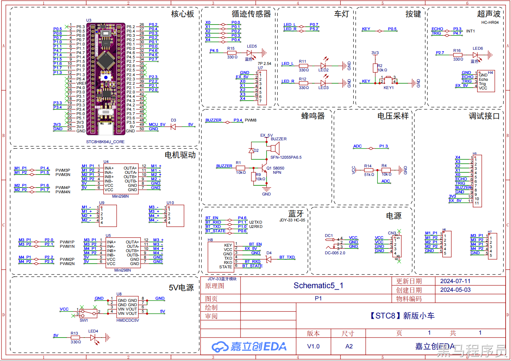</p><p data-lake-id="ucaf82062" id="ucaf82062">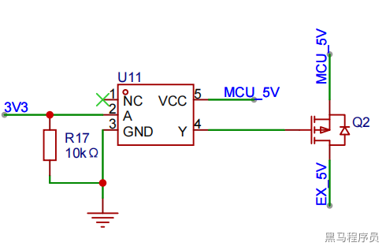</p><a class="yuque-card-link" href="https://www.yuque.com/attachments/yuque/0/2024/pdf/27903758/1718870528266-3e1fe1c3-ab72-44f8-8f9e-81d66fd39d39.pdf">localdoc：SCH_麦克纳姆轮小车_2024-06-20.pdf</a><h2 data-lake-id="KkOA6" id="KkOA6"><span data-lake-id="u31fa1f4e" id="u31fa1f4e">功能描述</span></h2><ul list="u385b4d8e"><li data-lake-id="u97982fed" fid="u3ea502c2" id="u97982fed"><span data-lake-id="u16602c3c" id="u16602c3c">4路直流电机PWM</span></li><li data-lake-id="uda069813" fid="u3ea502c2" id="uda069813"><span data-lake-id="u727bdd11" id="u727bdd11">蓝牙模块UART</span></li><li data-lake-id="u113327c0" fid="u3ea502c2" id="u113327c0"><span data-lake-id="ued6f65f7" id="ued6f65f7">蜂鸣器PWM</span></li><li data-lake-id="uea84ab29" fid="u3ea502c2" id="uea84ab29"><span data-lake-id="u7266bfce" id="u7266bfce">电压采样ADC</span></li><li data-lake-id="u71715dd4" fid="u3ea502c2" id="u71715dd4"><span data-lake-id="uf26b9b4e" id="uf26b9b4e">循迹传感器</span></li><li data-lake-id="ufc9b5b0b" fid="u3ea502c2" id="ufc9b5b0b"><span data-lake-id="u34eeb5ac" id="u34eeb5ac">超声波</span></li><li data-lake-id="u5ba70a51" fid="u3ea502c2" id="u5ba70a51"><span data-lake-id="ueec8d8ad" id="ueec8d8ad">按键</span></li><li data-lake-id="uee7a395d" fid="u3ea502c2" id="uee7a395d"><span data-lake-id="ud8f7d23b" id="ud8f7d23b">车灯</span></li></ul><h2 data-lake-id="dmB7G" id="dmB7G"><span data-lake-id="ud58e2bc9" id="ud58e2bc9">元器件清单</span></h2><table class="lake-table" data-lake-id="lLiht" id="lLiht" margin="true" style="width: 786px" width-mode="contain"><colgroup><col width="250"/><col width="106"/><col width="180"/><col width="250"/></colgroup><tbody><tr data-lake-id="uc6e506e2" id="uc6e506e2"><td data-lake-id="ud5661884" id="ud5661884" style="vertical-align: middle"><p data-lake-id="uc1033265" id="uc1033265" style="text-align: center"><strong><span data-lake-id="u58662f38" id="u58662f38">名称</span></strong></p></td><td data-lake-id="ufd19f489" id="ufd19f489" style="vertical-align: middle"><p data-lake-id="uf72b8905" id="uf72b8905" style="text-align: center"><strong><span data-lake-id="u585225d4" id="u585225d4">个数</span></strong></p></td><td data-lake-id="u1945fc7b" id="u1945fc7b"><p data-lake-id="ud883a2c3" id="ud883a2c3" style="text-align: center"><strong><span data-lake-id="uc1b9b3b4" id="uc1b9b3b4">图例</span></strong></p></td><td data-lake-id="u10a460de" id="u10a460de"><p data-lake-id="uab864733" id="uab864733" style="text-align: center"><strong><span data-lake-id="uc813755f" id="uc813755f">说明</span></strong></p></td></tr><tr data-lake-id="u44eba83d" id="u44eba83d"><td data-lake-id="uc75a9c61" id="uc75a9c61" style="vertical-align: middle"><p data-lake-id="ubec2b6de" id="ubec2b6de" style="text-align: center"><span data-lake-id="u2f93b352" id="u2f93b352">巡线开发板</span></p></td><td data-lake-id="ua44e727c" id="ua44e727c" style="vertical-align: middle"><p data-lake-id="ue9228f9a" id="ue9228f9a" style="text-align: center"><span data-lake-id="ub970bc79" id="ub970bc79">1个</span></p></td><td data-lake-id="u7e60c380" id="u7e60c380"><p data-lake-id="u0fc165fe" id="u0fc165fe">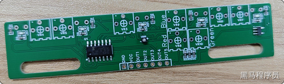</p></td><td data-lake-id="ua3f02548" id="ua3f02548"><p data-lake-id="u0226e55b" id="u0226e55b"><span data-lake-id="udaf976d7" id="udaf976d7">需焊接 7pin排针</span></p></td></tr><tr data-lake-id="u5c8b86b8" id="u5c8b86b8"><td data-lake-id="u8deb556c" id="u8deb556c" style="vertical-align: middle"><p data-lake-id="u9348201a" id="u9348201a" style="text-align: center"><span data-lake-id="u05a1436c" id="u05a1436c">滑动变阻器</span></p></td><td data-lake-id="u2c995611" id="u2c995611" style="vertical-align: middle"><p data-lake-id="ufcf6079c" id="ufcf6079c" style="text-align: center"><span data-lake-id="u210c358b" id="u210c358b">6个</span></p></td><td data-lake-id="u884ea967" id="u884ea967" style="vertical-align: middle"><p data-lake-id="ua40af796" id="ua40af796">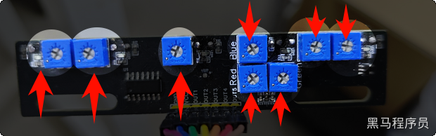</p></td><td data-lake-id="u5ec980db" id="u5ec980db"><p data-lake-id="u148b8619" id="u148b8619"><span data-lake-id="u1d9a09b2" id="u1d9a09b2">焊接在上面</span></p><p data-lake-id="ubadaf68e" id="ubadaf68e"><span data-lake-id="ua678a000" id="ua678a000">5个调整阈值<br/></span><span data-lake-id="u25c11d51" id="u25c11d51">3个调整灯颜色</span></p></td></tr><tr data-lake-id="ub32643f7" id="ub32643f7"><td data-lake-id="udd16c51c" id="udd16c51c" style="vertical-align: middle"><p data-lake-id="u7f7557e3" id="u7f7557e3" style="text-align: center"><span data-lake-id="u6a1390de" id="u6a1390de">光敏电阻</span></p></td><td data-lake-id="u9d228562" id="u9d228562" style="vertical-align: middle"><p data-lake-id="u73482e72" id="u73482e72" style="text-align: center"><span data-lake-id="u8f1eae7c" id="u8f1eae7c">5个</span></p></td><td data-lake-id="ufacdbfe6" id="ufacdbfe6" style="vertical-align: middle"><p data-lake-id="u6c37002c" id="u6c37002c">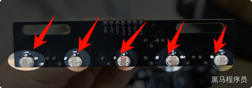</p></td><td data-lake-id="uacff1c18" id="uacff1c18"><p data-lake-id="u5784a72c" id="u5784a72c"><span data-lake-id="u1071c578" id="u1071c578">焊接在下面</span></p></td></tr><tr data-lake-id="u309ca7e0" id="u309ca7e0"><td data-lake-id="u9042c638" id="u9042c638" style="vertical-align: middle"><p data-lake-id="u1dbda00b" id="u1dbda00b" style="text-align: center"><span data-lake-id="ucedf946a" id="ucedf946a">车头3D打印件</span></p></td><td data-lake-id="u6ff3bdbe" id="u6ff3bdbe" style="vertical-align: middle"><p data-lake-id="u44ccda5f" id="u44ccda5f" style="text-align: center"><span data-lake-id="uc3c07b5e" id="uc3c07b5e">1个</span></p></td><td data-lake-id="uf5cf7ccf" id="uf5cf7ccf"><p data-lake-id="ue374ee44" id="ue374ee44">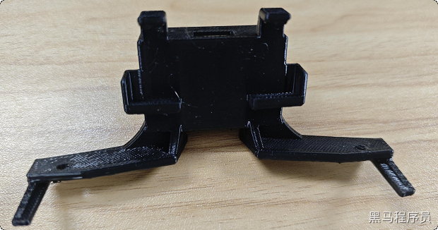</p></td><td data-lake-id="u422c2380" id="u422c2380"><p data-lake-id="u0a4966d6" id="u0a4966d6"><br/></p><p data-lake-id="uea1e96a0" id="uea1e96a0"><br/></p><p data-lake-id="uf8baf05f" id="uf8baf05f"><span data-lake-id="u29341d03" id="u29341d03">易断小心</span></p></td></tr><tr data-lake-id="uc257003a" id="uc257003a"><td data-lake-id="u573e00b0" id="u573e00b0" style="vertical-align: middle"><p data-lake-id="uba4765df" id="uba4765df" style="text-align: center"><span data-lake-id="u5fbc9daa" id="u5fbc9daa">超声波模块</span></p></td><td data-lake-id="uda803e4a" id="uda803e4a" style="vertical-align: middle"><p data-lake-id="ubb03959a" id="ubb03959a" style="text-align: center"><span data-lake-id="uc88b18c1" id="uc88b18c1">1个</span></p></td><td data-lake-id="ue2719bd3" id="ue2719bd3"><p data-lake-id="u4e595035" id="u4e595035">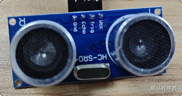</p></td><td data-lake-id="u0d6f6e00" id="u0d6f6e00"></td></tr><tr data-lake-id="u383fd063" id="u383fd063"><td data-lake-id="u50693e99" id="u50693e99" style="vertical-align: middle"><p data-lake-id="u71d2ff23" id="u71d2ff23" style="text-align: center"><span data-lake-id="ue9da3d43" id="ue9da3d43">4pin杜邦线</span></p></td><td data-lake-id="u401cebed" id="u401cebed" style="vertical-align: middle"><p data-lake-id="u767e5f04" id="u767e5f04" style="text-align: center"><span data-lake-id="u59ea2e6e" id="u59ea2e6e">1组</span></p></td><td data-lake-id="u294c1469" id="u294c1469"></td><td data-lake-id="uc6a0bf05" id="uc6a0bf05"><p data-lake-id="u5885f4ca" id="u5885f4ca"><span data-lake-id="u13392193" id="u13392193">连接驱动板与超声传感器</span></p></td></tr><tr data-lake-id="u57543c91" id="u57543c91"><td data-lake-id="ue2b64cdb" id="ue2b64cdb" style="vertical-align: middle"><p data-lake-id="u1a126549" id="u1a126549" style="text-align: center"><span data-lake-id="u5c778a28" id="u5c778a28">7pin杜邦线</span></p></td><td data-lake-id="u2dc6647b" id="u2dc6647b" style="vertical-align: middle"><p data-lake-id="u8293e1cc" id="u8293e1cc" style="text-align: center"><span data-lake-id="ufe33cf2e" id="ufe33cf2e">1组</span></p></td><td data-lake-id="u1869d6e9" id="u1869d6e9"></td><td data-lake-id="ufdbccfd0" id="ufdbccfd0"><p data-lake-id="u8d0ffde7" id="u8d0ffde7"><span data-lake-id="ua35ebc19" id="ua35ebc19">连接驱动板与巡线传感器</span></p></td></tr><tr data-lake-id="u4fb8910f" id="u4fb8910f"><td data-lake-id="ub036eed6" id="ub036eed6" style="vertical-align: middle"><p data-lake-id="u852d0eaa" id="u852d0eaa" style="text-align: center"><span data-lake-id="u3b9a9647" id="u3b9a9647">小车驱动板</span></p></td><td data-lake-id="u047b8f51" id="u047b8f51" style="vertical-align: middle"><p data-lake-id="u9872f108" id="u9872f108" style="text-align: center"><span data-lake-id="u90f6e1ad" id="u90f6e1ad">1个</span></p></td><td data-lake-id="ue981f5ef" id="ue981f5ef"><p data-lake-id="u834a40f2" id="u834a40f2">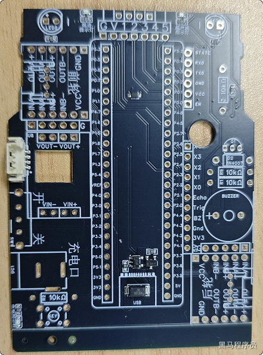</p></td><td data-lake-id="u89ab8eac" id="u89ab8eac"><p data-lake-id="uf991a8b5" id="uf991a8b5"><br/></p></td></tr><tr data-lake-id="ub74bf78d" id="ub74bf78d"><td data-lake-id="ue0fb76b6" id="ue0fb76b6" style="vertical-align: middle"><p data-lake-id="u6b36a865" id="u6b36a865" style="text-align: center"><span data-lake-id="ud1a9f986" id="ud1a9f986">LED灯</span></p></td><td data-lake-id="u3028ea7e" id="u3028ea7e" style="vertical-align: middle"><p data-lake-id="u3c92eb50" id="u3c92eb50" style="text-align: center"><span data-lake-id="ub0ab2869" id="ub0ab2869">2个</span></p></td><td data-lake-id="u57e50e83" id="u57e50e83"><p data-lake-id="u7e314995" id="u7e314995">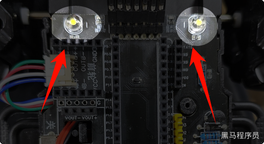</p></td><td data-lake-id="ua15e7d58" id="ua15e7d58" style="vertical-align: middle"><p data-lake-id="ue3c79453" id="ue3c79453"><span data-lake-id="u25bf09d9" id="u25bf09d9">区分正负极(长正短负)</span></p></td></tr><tr data-lake-id="uc6c0a52b" id="uc6c0a52b" style="height: 198px"><td data-lake-id="u74251610" id="u74251610" style="vertical-align: middle"><p data-lake-id="u45dffac4" id="u45dffac4" style="text-align: center"><span data-lake-id="ue02db5c5" id="ue02db5c5">10KΩ电阻</span></p></td><td data-lake-id="u4aceb8b0" id="u4aceb8b0" style="vertical-align: middle"><p data-lake-id="u48712662" id="u48712662" style="text-align: center"><span data-lake-id="u57c7dc1e" id="u57c7dc1e">4根</span></p></td><td data-lake-id="ue76c733a" id="ue76c733a"><p data-lake-id="u15947361" id="u15947361">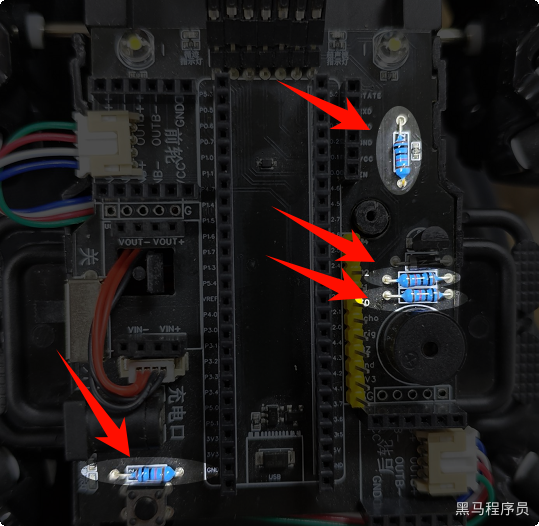</p></td><td data-lake-id="u8b1733f8" id="u8b1733f8"></td></tr><tr data-lake-id="uaa6df015" id="uaa6df015"><td data-lake-id="u7c1dd6b1" id="u7c1dd6b1" style="vertical-align: middle"><p data-lake-id="u449af711" id="u449af711" style="text-align: center"><span data-lake-id="u0b7a76dc" id="u0b7a76dc">三极管</span></p></td><td data-lake-id="ud692336c" id="ud692336c" style="vertical-align: middle"><p data-lake-id="u481c9321" id="u481c9321" style="text-align: center"><span data-lake-id="ub908ab8c" id="ub908ab8c">1个</span></p></td><td data-lake-id="u59571fa7" id="u59571fa7"><p data-lake-id="u93da62ed" id="u93da62ed">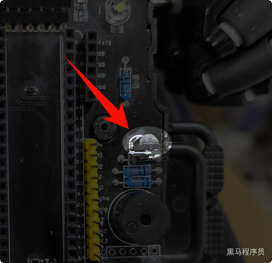</p></td><td data-lake-id="uc89352f2" id="uc89352f2" style="vertical-align: middle"><p data-lake-id="u224c6df5" id="u224c6df5"><span data-lake-id="ub0206d7e" id="ub0206d7e">要区分方向</span></p></td></tr><tr data-lake-id="u21aa4df4" id="u21aa4df4"><td data-lake-id="u11153a65" id="u11153a65" style="vertical-align: middle"><p data-lake-id="u0a8b1a9e" id="u0a8b1a9e" style="text-align: center"><span data-lake-id="ud910078c" id="ud910078c">二极管</span></p></td><td data-lake-id="u7a800174" id="u7a800174" style="vertical-align: middle"><p data-lake-id="u16c667a4" id="u16c667a4" style="text-align: center"><span data-lake-id="u4d8c3989" id="u4d8c3989">1个</span></p></td><td data-lake-id="u8cfe7c98" id="u8cfe7c98"><p data-lake-id="u3523102b" id="u3523102b">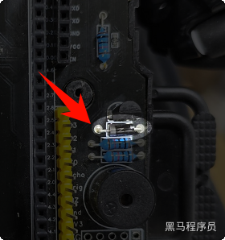</p></td><td data-lake-id="ubd8f4766" id="ubd8f4766" style="vertical-align: middle"><p data-lake-id="ud49b0bf5" id="ud49b0bf5"><span data-lake-id="u261895aa" id="u261895aa">区分正负极</span></p></td></tr><tr data-lake-id="ucb59009a" id="ucb59009a"><td data-lake-id="ubee1e0fa" id="ubee1e0fa" style="vertical-align: middle"><p data-lake-id="u81dc635b" id="u81dc635b" style="text-align: center"><span data-lake-id="u8dc75981" id="u8dc75981">蜂鸣器</span></p></td><td data-lake-id="uabf141da" id="uabf141da" style="vertical-align: middle"><p data-lake-id="u9baafefe" id="u9baafefe" style="text-align: center"><span data-lake-id="uf36b0094" id="uf36b0094">1个</span></p></td><td data-lake-id="ufb9d139b" id="ufb9d139b"><p data-lake-id="ue806d4ef" id="ue806d4ef">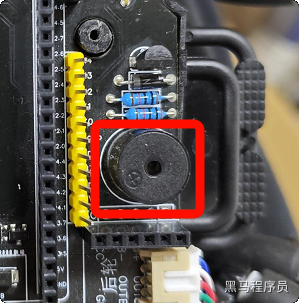</p></td><td data-lake-id="u2cabd586" id="u2cabd586" style="vertical-align: middle"><p data-lake-id="ub69ed130" id="ub69ed130"><span data-lake-id="ub71adecd" id="ub71adecd">区分正负极</span></p></td></tr><tr data-lake-id="u6ad5f16f" id="u6ad5f16f"><td data-lake-id="ubcb53c34" id="ubcb53c34" style="vertical-align: middle"><p data-lake-id="u92fa492d" id="u92fa492d" style="text-align: center"><span data-lake-id="u8e30c0c6" id="u8e30c0c6">4Pin连接器/端子</span></p></td><td data-lake-id="u41523b5d" id="u41523b5d" style="vertical-align: middle"><p data-lake-id="u82f9865f" id="u82f9865f" style="text-align: center"><span data-lake-id="ufccd69cb" id="ufccd69cb">2个</span></p></td><td data-lake-id="uf1af963a" id="uf1af963a"><p data-lake-id="u333d6191" id="u333d6191">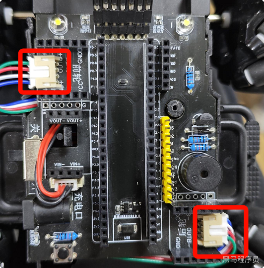</p></td><td data-lake-id="u7130ea41" id="u7130ea41"><p data-lake-id="u3795665f" id="u3795665f"><span data-lake-id="u54aef5fb" id="u54aef5fb">如果发的是直插件, 要将缺口朝里焊(底部盖住丝印)</span></p><p data-lake-id="u7df2d7a3" id="u7df2d7a3">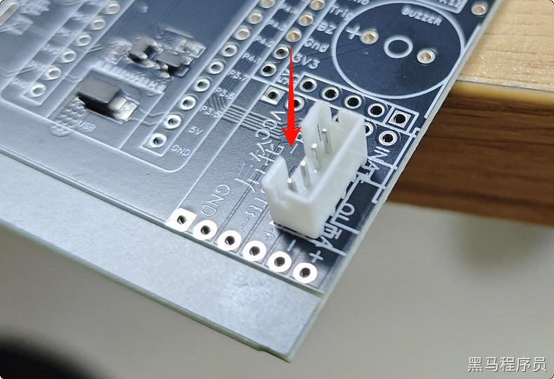</p></td></tr><tr data-lake-id="uc6b53d39" id="uc6b53d39"><td data-lake-id="u31a69298" id="u31a69298" style="vertical-align: middle"><p data-lake-id="u58959a3f" id="u58959a3f" style="text-align: center"><span data-lake-id="uf690fb78" id="uf690fb78">开关</span></p></td><td data-lake-id="u18fcb56b" id="u18fcb56b" style="vertical-align: middle"><p data-lake-id="ufd477db9" id="ufd477db9" style="text-align: center"><span data-lake-id="u538597d2" id="u538597d2">1个</span></p></td><td data-lake-id="ua5795ae2" id="ua5795ae2"><p data-lake-id="uf4d08add" id="uf4d08add">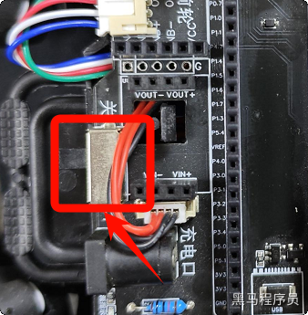</p></td><td data-lake-id="u72da7fab" id="u72da7fab"></td></tr><tr data-lake-id="u6d8fbae5" id="u6d8fbae5"><td data-lake-id="u09d25860" id="u09d25860" style="vertical-align: middle"><p data-lake-id="u722221aa" id="u722221aa" style="text-align: center"><span data-lake-id="u704a8d53" id="u704a8d53">DC充电头</span></p></td><td data-lake-id="uf7903643" id="uf7903643" style="vertical-align: middle"><p data-lake-id="uc03ed69b" id="uc03ed69b" style="text-align: center"><span data-lake-id="u015deb2f" id="u015deb2f">1个</span></p></td><td data-lake-id="u3a7b6708" id="u3a7b6708"><p data-lake-id="ud76b33fb" id="ud76b33fb">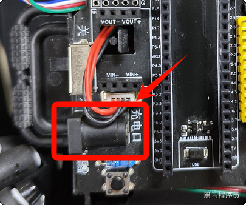</p></td><td data-lake-id="ucbb8c5f3" id="ucbb8c5f3"></td></tr><tr data-lake-id="u87dfc81d" id="u87dfc81d"><td data-lake-id="ub703c531" id="ub703c531" style="vertical-align: middle"><p data-lake-id="u36d4c3ce" id="u36d4c3ce" style="text-align: center"><span data-lake-id="u54984ea4" id="u54984ea4">按键</span></p></td><td data-lake-id="u9415384e" id="u9415384e" style="vertical-align: middle"><p data-lake-id="u68c7ae13" id="u68c7ae13" style="text-align: center"><span data-lake-id="uf6a7d8df" id="uf6a7d8df">1个</span></p></td><td data-lake-id="u801be2c1" id="u801be2c1"><p data-lake-id="u71346c3d" id="u71346c3d">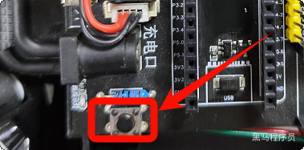</p></td><td data-lake-id="u61d07435" id="u61d07435"></td></tr><tr data-lake-id="u8e2011de" id="u8e2011de"><td data-lake-id="u2da3b069" id="u2da3b069" style="vertical-align: middle"><p data-lake-id="u71771178" id="u71771178" style="text-align: center"><span data-lake-id="u852809c7" id="u852809c7">6pin排母</span></p></td><td data-lake-id="uc4b00997" id="uc4b00997" style="vertical-align: middle"><p data-lake-id="u643764c4" id="u643764c4" style="text-align: center"><span data-lake-id="u64e74ffe" id="u64e74ffe">5个</span></p></td><td data-lake-id="u03ea5c5f" id="u03ea5c5f"><p data-lake-id="u9794f8f3" id="u9794f8f3">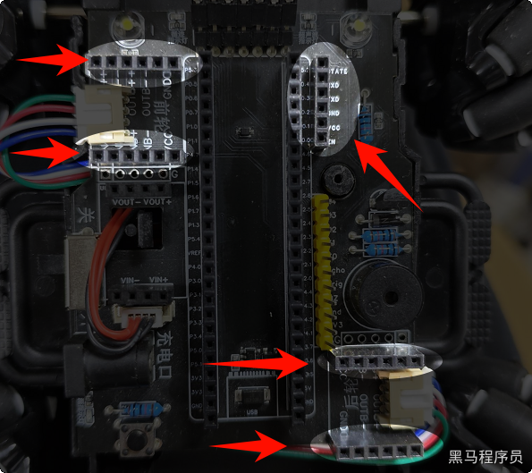</p></td><td data-lake-id="u23c168d9" id="u23c168d9"></td></tr><tr data-lake-id="u23851aa5" id="u23851aa5"><td data-lake-id="u39272f3a" id="u39272f3a" style="vertical-align: middle"><p data-lake-id="u85845a5c" id="u85845a5c" style="text-align: center"><span data-lake-id="u82d8c37c" id="u82d8c37c">4pin排母</span></p></td><td data-lake-id="ub348ff06" id="ub348ff06" style="vertical-align: middle"><p data-lake-id="uade63d13" id="uade63d13" style="text-align: center"><span data-lake-id="uaeffa1e9" id="uaeffa1e9">2个</span></p></td><td data-lake-id="u1705c5b2" id="u1705c5b2"><p data-lake-id="ua7717145" id="ua7717145">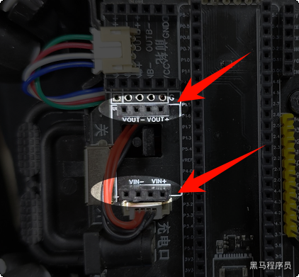</p></td><td data-lake-id="ua0b5888b" id="ua0b5888b"></td></tr><tr data-lake-id="ue6cbc359" id="ue6cbc359"><td data-lake-id="u461c0fb8" id="u461c0fb8" style="vertical-align: middle"><p data-lake-id="uc42f99dd" id="uc42f99dd" style="text-align: center"><span data-lake-id="ua5226d09" id="ua5226d09">40pin排针</span></p></td><td data-lake-id="uad8f430d" id="uad8f430d" style="vertical-align: middle"><p data-lake-id="u9cdaf1d8" id="u9cdaf1d8" style="text-align: center"><span data-lake-id="u272d35c5" id="u272d35c5">1根</span></p></td><td data-lake-id="u1fa8ec2d" id="u1fa8ec2d"></td><td data-lake-id="u255f55f5" id="u255f55f5"><p data-lake-id="u57b9a243" id="u57b9a243"><span data-lake-id="u2b157470" id="u2b157470">降压模块 4pin * 2</span></p><p data-lake-id="u86a0bc15" id="u86a0bc15"><span data-lake-id="u2a0e114f" id="u2a0e114f">调试排针 11pin</span></p><p data-lake-id="uedf1eb07" id="uedf1eb07"><span data-lake-id="u0ace5534" id="u0ace5534">电机驱动调试 5pin * 2</span></p><p data-lake-id="u76a4184a" id="u76a4184a"><span data-lake-id="u0e0e3f08" id="u0e0e3f08">超声波 4pin</span></p><p data-lake-id="u79f9376f" id="u79f9376f"><span data-lake-id="u52900f77" id="u52900f77">巡线传感器 7pin</span></p></td></tr><tr data-lake-id="u71f694a6" id="u71f694a6"><td data-lake-id="u0b7e420c" id="u0b7e420c" style="vertical-align: middle"><p data-lake-id="ud522cde9" id="ud522cde9" style="text-align: center"><span data-lake-id="u0341ac6d" id="u0341ac6d">电机驱动模块</span></p></td><td data-lake-id="u0b96a708" id="u0b96a708" style="vertical-align: middle"><p data-lake-id="ua70984dd" id="ua70984dd" style="text-align: center"><span data-lake-id="u81416e54" id="u81416e54">2个</span></p></td><td data-lake-id="udb198396" id="udb198396"><p data-lake-id="u8f320a97" id="u8f320a97">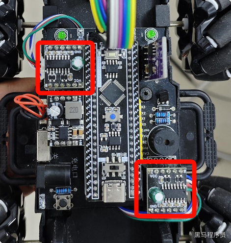</p></td><td data-lake-id="u932df848" id="u932df848" style="vertical-align: middle"><p data-lake-id="u54571bfe" id="u54571bfe"><span data-lake-id="u0004d892" id="u0004d892">配合2个6pin排母, 插上去后, 电容偏向STC8H这边</span></p></td></tr><tr data-lake-id="u9fe672fe" id="u9fe672fe"><td data-lake-id="u72102b63" id="u72102b63" style="vertical-align: middle"><p data-lake-id="u9a2b4605" id="u9a2b4605" style="text-align: center"><span data-lake-id="ub9d941a5" id="ub9d941a5">降压模块</span></p></td><td data-lake-id="ufb0e4e2e" id="ufb0e4e2e" style="vertical-align: middle"><p data-lake-id="uf59b9293" id="uf59b9293" style="text-align: center"><span data-lake-id="u7b4e6955" id="u7b4e6955">1个</span></p></td><td data-lake-id="ucfb35f70" id="ucfb35f70"><p data-lake-id="u94dbb29b" id="u94dbb29b">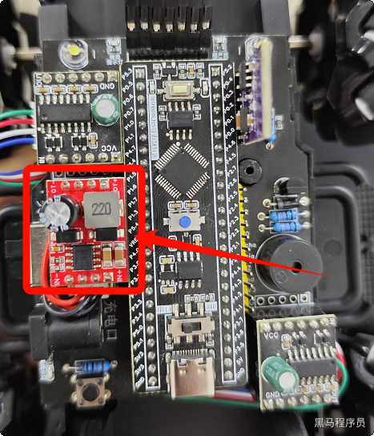</p></td><td data-lake-id="u27cd12f7" id="u27cd12f7" style="vertical-align: middle"><p data-lake-id="u15489c3d" id="u15489c3d"><span data-lake-id="uc9ab53c1" id="uc9ab53c1">配合1个4pin排母, 有的是黑色, 有的是红色</span></p></td></tr><tr data-lake-id="ue1ba302b" id="ue1ba302b"><td data-lake-id="ube6c3677" id="ube6c3677" style="vertical-align: middle"><p data-lake-id="u19e5d894" id="u19e5d894" style="text-align: center"><span data-lake-id="u32950ea5" id="u32950ea5">蓝牙模块</span></p></td><td data-lake-id="u6d4e4fa5" id="u6d4e4fa5" style="vertical-align: middle"><p data-lake-id="u3517d755" id="u3517d755" style="text-align: center"><span data-lake-id="uec3cf5b0" id="uec3cf5b0">1个</span></p></td><td data-lake-id="uada5da02" id="uada5da02"><p data-lake-id="u2488b55a" id="u2488b55a">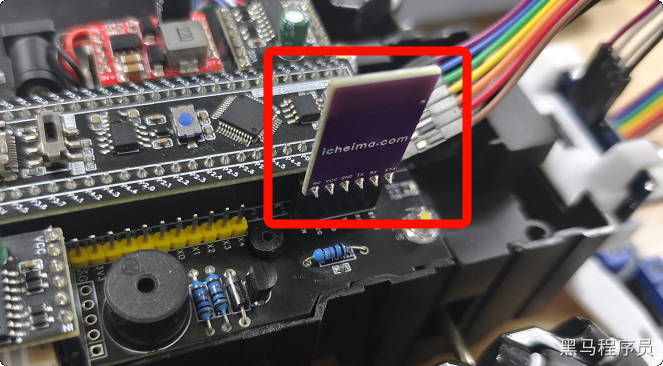</p></td><td data-lake-id="uad2bb66d" id="uad2bb66d"><p data-lake-id="u36a72ee9" id="u36a72ee9"><span data-lake-id="u1980840d" id="u1980840d">​</span><br/></p><p data-lake-id="u1fe24d09" id="u1fe24d09"><span data-lake-id="u05d43dff" id="u05d43dff">​</span><br/></p><p data-lake-id="u6cbe2fbe" id="u6cbe2fbe"><span data-lake-id="ua6ff7bbf" id="ua6ff7bbf">配合6pin排母, 注意方向</span></p></td></tr></tbody></table><p data-lake-id="u326b4319" id="u326b4319"><br/></p><h2 data-lake-id="tMRru" id="tMRru"><span data-lake-id="u0fa4fecf" id="u0fa4fecf">注意事项</span></h2><p data-lake-id="u84afd867" id="u84afd867">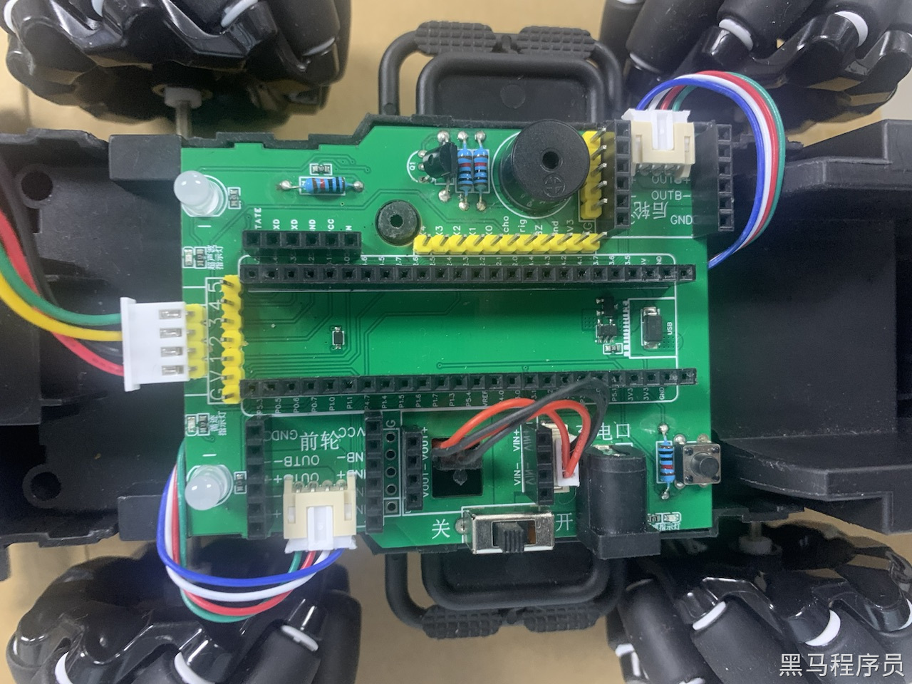</p><p data-lake-id="u8d68ada8" id="u8d68ada8"><br/></p><p data-lake-id="uddcd4848" id="uddcd4848"><br/></p><h3 data-lake-id="QS08n" id="QS08n"><span data-lake-id="u809da562" id="u809da562">焊错易错点</span></h3><ul list="u1926eb5c"><li data-lake-id="u4ce87540" fid="u3052bcc8" id="u4ce87540"><span data-lake-id="u6717ebc9" id="u6717ebc9">三极管要对齐圆弧和丝印，不要焊反</span></li><li data-lake-id="ud529a675" fid="u3052bcc8" id="ud529a675"><span data-lake-id="u22096097" id="u22096097">肖特基二极管分正负极，有灰色线的是负极，不要焊反</span></li><li data-lake-id="u0d049256" fid="u3052bcc8" id="u0d049256"><span data-lake-id="uc981d6ba" id="uc981d6ba">2个车头LED灯，有缺口的是负极，不要焊反</span></li><li data-lake-id="uedcb359f" fid="u3052bcc8" id="uedcb359f"><span data-lake-id="ucaf3aeef" id="ucaf3aeef">蜂鸣器有正负极，不要焊反</span></li></ul><p data-lake-id="u8f178981" id="u8f178981">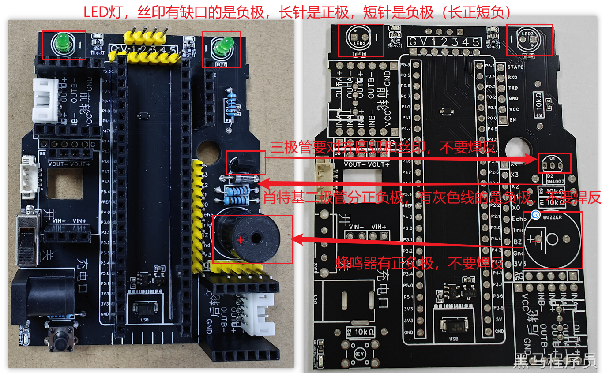</p><p data-lake-id="ucd43967f" id="ucd43967f"><span data-lake-id="u76e82c02" id="u76e82c02">​</span><br/></p><ol list="u6fb9ec55"><li data-lake-id="u0e9b7e16" fid="u507422c8" id="u0e9b7e16"><span data-lake-id="u26f632d5" id="u26f632d5">先焊接矮个子（电阻、二极管、发光二极管）</span></li></ol><ol data-lake-indent="1" list="u6fb9ec55"><li data-lake-id="u1e53cd27" fid="u507422c8" id="u1e53cd27"><span data-lake-id="u955d640a" id="u955d640a">LED灯，丝印有缺口的是负极，长针是正极，短针是负极</span><strong><span data-lake-id="uaa07d0be" id="uaa07d0be">（长正短负）</span></strong></li><li data-lake-id="u9a7a4db1" fid="u507422c8" id="u9a7a4db1"><span data-lake-id="ue73fab41" id="ue73fab41">二极管分正负极，有</span><strong><span data-lake-id="uebc2f7d4" id="uebc2f7d4">灰色短条的是负极</span></strong><span data-lake-id="u2caafa33" id="u2caafa33">，跟丝印方向一致即可</span></li></ol><ol list="u6fb9ec55" start="2"><li data-lake-id="u89552cd2" fid="u507422c8" id="u89552cd2"><span data-lake-id="u1aec1b18" id="u1aec1b18">再焊接中个子（按钮、三极管）</span></li></ol><ol data-lake-indent="1" list="u6fb9ec55"><li data-lake-id="uf2257847" fid="u507422c8" id="uf2257847"><span data-lake-id="u238033e2" id="u238033e2">单刀双掷开关（不分正负极）</span></li><li data-lake-id="u2bff0da7" fid="u507422c8" id="u2bff0da7"><span data-lake-id="u737e538b" id="u737e538b">蜂鸣器（有分正负极）</span></li><li data-lake-id="u07ae2363" fid="u507422c8" id="u07ae2363"><span data-lake-id="u4ce2512b" id="u4ce2512b">三极管看准丝印和孔位再焊接</span></li></ol><ol list="u6fb9ec55" start="3"><li data-lake-id="udacd05ef" fid="u507422c8" id="udacd05ef"><span data-lake-id="u806cdaaf" id="u806cdaaf">焊接排母</span></li></ol><ol data-lake-indent="1" list="u6fb9ec55"><li data-lake-id="uaf7a0006" fid="u507422c8" id="uaf7a0006"><strong><span data-lake-id="uc06d38cb" id="uc06d38cb" style="color: #DF2A3F">电机驱动板</span></strong><span data-lake-id="u893572b1" id="u893572b1">不要直接焊到板子上，先把电机驱动板通过排针插在排母上，排母再焊接在板子上</span></li><li data-lake-id="u7e4f359f" fid="u507422c8" id="u7e4f359f"><strong><span data-lake-id="u6887d3a5" id="u6887d3a5" style="color: #DF2A3F">降压模块</span></strong><span data-lake-id="ucc148eeb" id="ucc148eeb">不要直接焊到板子上，先把降压模块通过排针插在排母上，排母再焊接在板子上</span></li><li data-lake-id="u8cda64f8" fid="u507422c8" id="u8cda64f8"><strong><span data-lake-id="ua8e7bf03" id="ua8e7bf03" style="color: #DF2A3F">核心板</span></strong><span data-lake-id="ub37a3217" id="ub37a3217">不要直接焊到板子上，先把核心板通过排针插在排母上，排母再焊接在板子上</span></li><li data-lake-id="u1229d2bf" fid="u507422c8" id="u1229d2bf"><strong><span data-lake-id="u11f56a8b" id="u11f56a8b" style="color: #DF2A3F">蓝牙</span></strong><span data-lake-id="u397b3d05" id="u397b3d05">模块不要直接焊接，通过排母连在板子上</span></li><li data-lake-id="u8dfdf538" fid="u507422c8" id="u8dfdf538"><span data-lake-id="u202b5565" id="u202b5565">车头4Pin，7Pin排针朝上焊接即可</span></li></ol><p data-lake-id="ub3ddd63e" id="ub3ddd63e"><span data-lake-id="u39339c7d" id="u39339c7d">​</span><br/></p><ul list="u771a16cc"><li data-lake-id="u08f77d07" fid="u0e6bb20e" id="u08f77d07"><span data-lake-id="u8c3c6296" id="u8c3c6296">排针排母焊接说明</span></li></ul><p data-lake-id="u71f38fb8" id="u71f38fb8" style="text-indent: 2em">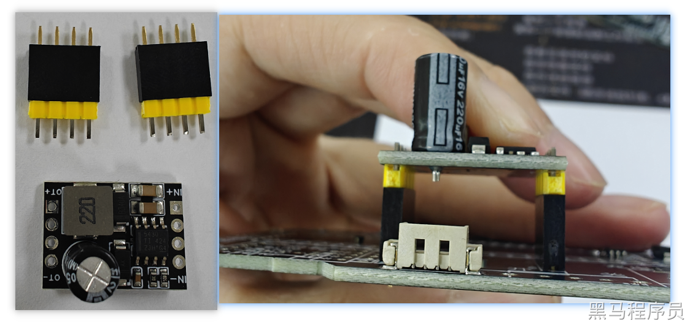</p><p data-lake-id="u435676e4" id="u435676e4" style="text-indent: 2em; text-align: center">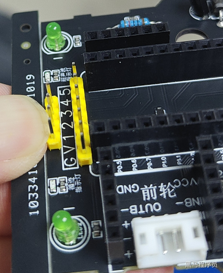</p><ul list="u00bba908"><li data-lake-id="uca3a876a" fid="u81a0e2de" id="uca3a876a"><span data-lake-id="u813686a8" id="u813686a8">车头连接说明</span></li></ul><p data-lake-id="uc48d36e1" id="uc48d36e1">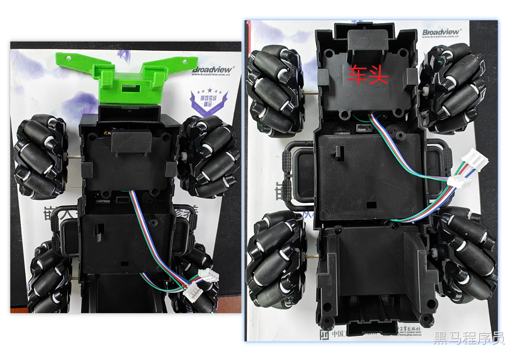</p><p data-lake-id="uab164231" id="uab164231" style="text-indent: 2em; text-align: center">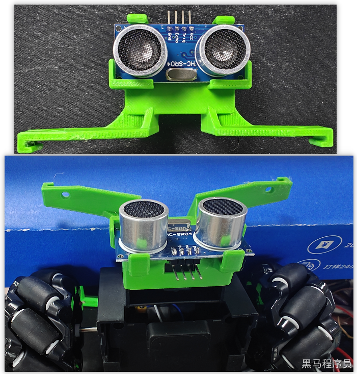</p><ul list="u81eb6229"><li data-lake-id="u80ad0316" fid="ua4b40b9b" id="u80ad0316"><span data-lake-id="uc3fc388a" id="uc3fc388a">超声波说明</span></li></ul><p data-lake-id="uad76a7a5" id="uad76a7a5" style="text-align: center">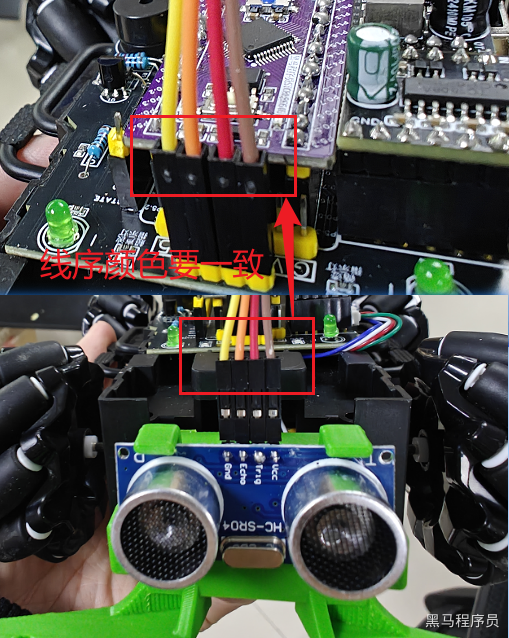</p><p data-lake-id="ue3703873" id="ue3703873" style="text-align: center">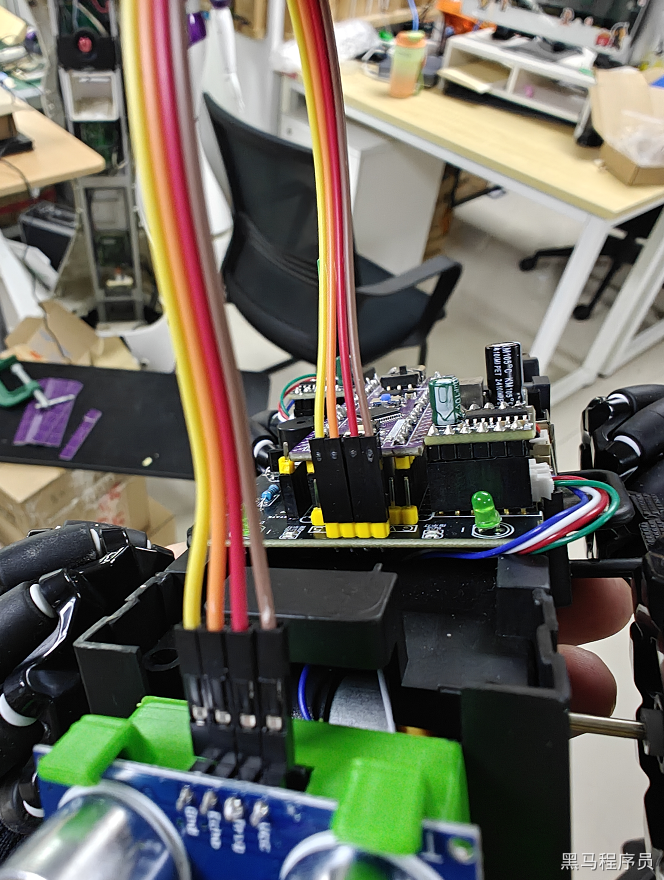</p><ul list="u9bda8000"><li data-lake-id="u0fe236da" fid="u1c4cbc62" id="u0fe236da"><span data-lake-id="ud20c1a26" id="ud20c1a26">巡线模块说明</span></li></ul><p data-lake-id="ud6c9a978" id="ud6c9a978">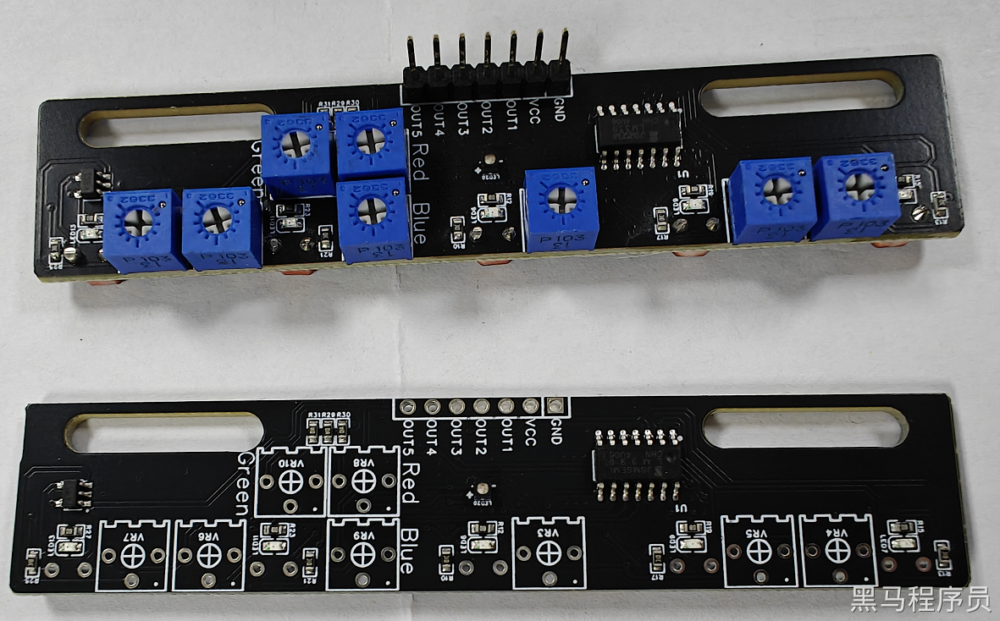</p><p data-lake-id="ua86eda23" id="ua86eda23">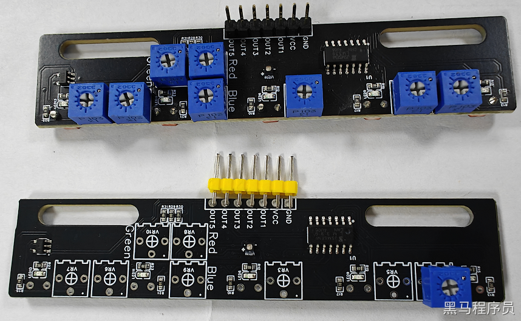</p><p data-lake-id="u2b0c4513" id="u2b0c4513">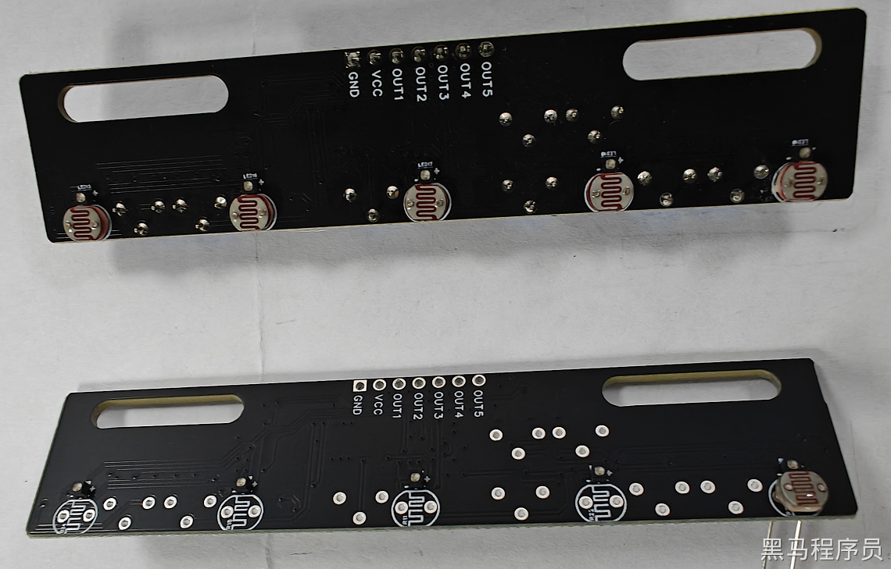</p><p data-lake-id="u68068b85" id="u68068b85" style="text-align: center">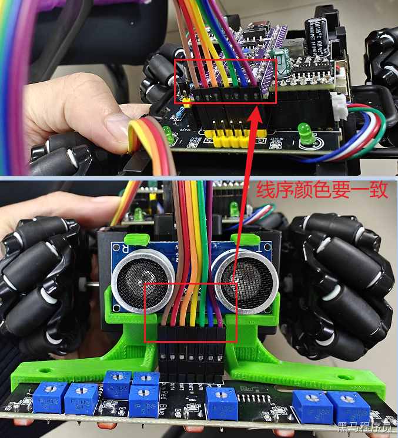</p><p data-lake-id="uc825855a" id="uc825855a"><br/></p><h3 data-lake-id="R8udd" id="R8udd"><span data-lake-id="u282cb87c" id="u282cb87c">模块拔插注意</span></h3><ul list="u79a1c1c0"><li data-lake-id="u29409b9b" fid="uaddd779f" id="u29409b9b"><span data-lake-id="uc28223d7" id="uc28223d7">STC8核心板的Type-C朝向车尾，反插会有烧毁风险！</span></li><li data-lake-id="u0fff9925" fid="uaddd779f" id="u0fff9925"><span data-lake-id="u9c8a57a2" id="u9c8a57a2">蓝牙模块看准丝印再插入，反着插入会有烧毁风险！</span></li><li data-lake-id="u9b2160d1" fid="uaddd779f" id="u9b2160d1"><span data-lake-id="ue80a45d7" id="ue80a45d7">超声波模块VCC和GND看准了再接线，插错有烧毁模块和STC8核心板风险！</span></li><li data-lake-id="u8c8a2c12" fid="uaddd779f" id="u8c8a2c12"><span data-lake-id="u8fd97a92" id="u8fd97a92">循线模块VCC和GND看清楚再接线，插错有烧毁模块和STC8核心板风险！</span></li></ul><h3 data-lake-id="l6pIE" id="l6pIE"><span data-lake-id="u2aa2e8df" id="u2aa2e8df">最终效果</span></h3><p data-lake-id="u8cf0011f" id="u8cf0011f">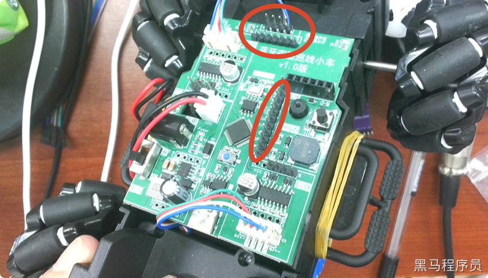</p><p data-lake-id="u34e0ae9c" id="u34e0ae9c"><br/></p><p data-lake-id="u1898fdc7" id="u1898fdc7" style="text-align: center"><br/></p><p data-lake-id="ua87b083b" id="ua87b083b" style="text-align: center">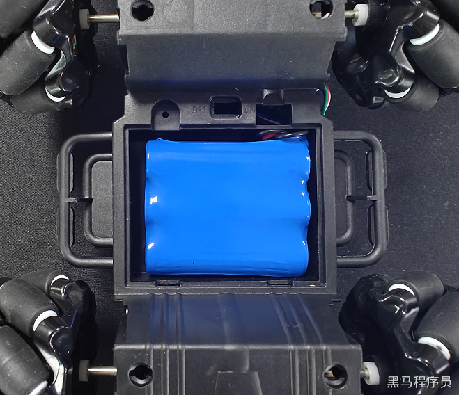</p><p data-lake-id="u9220d64e" id="u9220d64e">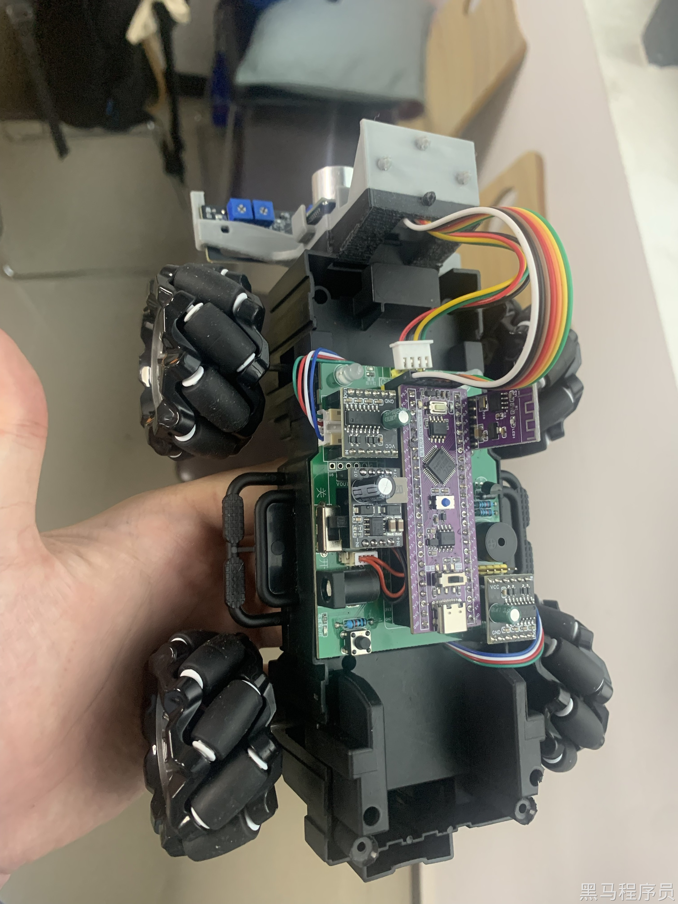</p><h2 data-lake-id="uptIp" id="uptIp"><span data-lake-id="ud08ed1fa" id="ud08ed1fa">电机驱动</span></h2><p data-lake-id="ua0f4df9b" id="ua0f4df9b"><span data-lake-id="u1ad907bc" id="u1ad907bc">单电机2路PWM驱动：L298N</span></p><p data-lake-id="ueb7fe37f" id="ueb7fe37f"><span data-lake-id="u5dce439f" id="u5dce439f">双电机4路PWM驱动芯片：</span></p><ul list="u580da852"><li data-lake-id="ud6bab4b6" fid="ufdce6d09" id="ud6bab4b6"><span data-lake-id="u28249af2" id="u28249af2">MX1616 </span></li><li data-lake-id="u99ddbc83" fid="ufdce6d09" id="u99ddbc83"><span data-lake-id="u9f1ed09a" id="u9f1ed09a">DRV8833</span></li><li data-lake-id="u05f9de31" fid="ufdce6d09" id="u05f9de31"><span data-lake-id="u52604421" id="u52604421">TB6612FNG</span></li><li data-lake-id="u4a374286" fid="ufdce6d09" id="u4a374286"><span data-lake-id="u67168910" id="u67168910">TC1508A</span></li></ul><p data-lake-id="u90ae9fe9" id="u90ae9fe9"><span data-lake-id="ue5d479cc" id="ue5d479cc">VM供电电压2V~10V，VCC电压5V</span></p><p data-lake-id="u53d77414" id="u53d77414"><span data-lake-id="uef7bf320" id="uef7bf320">​</span><br/></p><a class="yuque-card-link" href="https://www.yuque.com/attachments/yuque/0/2025/zip/27903758/1758338122261-1d62fa22-4ab9-480e-8e2a-e76d5e3b2cbe.zip">localdoc：C51_BLE_Car.zip</a><h2 data-lake-id="kSPUQ" id="kSPUQ"><br/></h2>